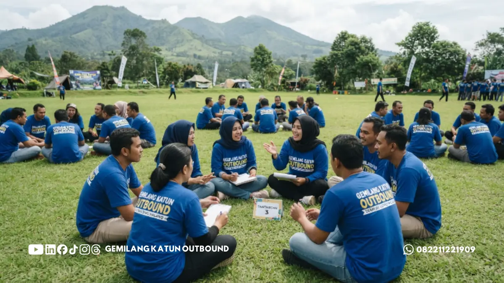

Daftar Isi
- Apa Itu Team Building Berbasis Masalah Tim?
- Mengapa Diagnosis Masalah Tim Penting Sebelum Memilih Program?
- Bagaimana Ciri Tim yang Bermasalah di Komunikasi?
- Kapan Tim Membutuhkan Simulasi Leadership?
- Mengapa Onboarding Karyawan Baru Perlu Pendekatan Berbeda?
- Apa Perbedaan Utama Ketiga Pendekatan Ini?
- Bagaimana Cara Memilih Vendor Team Building di Malang?
- Apa Kesalahan Umum yang Membuat Team Building Gagal Berdampak?
Team building Malang paling efektif ketika programnya dipilih berdasarkan akar masalah tim, bukan sekadar mengikuti tren kegiatan luar ruang. Tiga masalah paling umum yang dihadapi organisasi adalah komunikasi buntu, kepemimpinan belum matang, dan onboarding karyawan baru yang lambat beradaptasi.
- Team building bukan aktivitas seragam untuk semua tim; setiap masalah tim butuh pendekatan simulasi yang berbeda.
- Masalah komunikasi biasanya diatasi dengan permainan kelompok yang memaksa koordinasi verbal dan non-verbal.
- Masalah leadership membutuhkan simulasi pengambilan keputusan dan pendelegasian tugas dalam tekanan waktu.
- Onboarding karyawan baru memerlukan aktivitas yang mempercepat kedekatan personal, bukan sekadar permainan kompetitif.
- Kawasan Malang-Batu menawarkan variasi lokasi outdoor yang mendukung ketiga jenis simulasi tersebut secara natural.
Banyak perusahaan terjebak memilih paket kegiatan hanya dari popularitas wahana permainan semata. Akibatnya, setelah kegiatan berakhir di lapangan, dinamika koordinasi di ruang kerja tetap tidak mengalami perbaikan yang terukur.
Apa Itu Team Building Berbasis Masalah Tim?
Team building berbasis masalah tim adalah pendekatan merancang program outbound dengan tujuan spesifik menjawab hambatan nyata organisasi. Program ini berfokus membedah kendala kerja aktual, bukan sekadar mengisi kekosongan agenda gathering tahunan perusahaan.
Pendekatan ini berbeda dari team building generik karena selalu diawali dari proses diagnosis mendalam. Fasilitator akan menggali apakah kendala utama berada pada alur komunikasi antardivisi, kepercayaan terhadap pemimpin, atau proses adaptasi karyawan baru.
Bagi tim di Jawa Timur, kedekatan dengan dataran tinggi seperti Batu dan Pujon memudahkan penyelenggaraan simulasi outdoor yang terarah. Manajemen HR dapat mengoptimalkan efisiensi waktu serta anggaran perjalanan tanpa mengurangi kualitas pembinaan tim.
Mengapa Diagnosis Masalah Tim Penting Sebelum Memilih Program?
Diagnosis masalah tim sangat krusial karena program yang salah sasaran hanya menghasilkan kesenangan sesaat. Tanpa pemetaan awal yang tepat, perubahan perilaku kerja yang diharapkan pasca kegiatan tidak akan terwujud secara nyata.
Banyak instansi memilih paket outbound hanya berdasarkan popularitas wahana permainan seperti flying fox atau simulasi tempur. Peserta memang terhibur di lapangan, namun kebiasaan kerja tim di kantor tetap tidak mengalami perbaikan signifikan.

Proses diagnosis biasanya dilakukan lewat konsultasi awal antara HR dan fasilitator, kuesioner singkat, maupun observasi rapat kerja. Hasil pemetaan inilah yang menjadi pijakan dalam menentukan apakah tim membutuhkan simulasi komunikasi, kepemimpinan, atau onboarding.
Bagaimana Ciri Tim yang Bermasalah di Komunikasi?
Tim yang mengalami kendala komunikasi biasanya ditandai instruksi kerja yang sering disalahpahami oleh bawahan maupun rekan sejawat. Pengambilan keputusan menjadi lambat karena penyebaran informasi tidak merata ke seluruh lini organisasi.
Gejala ini terlihat jelas saat rapat rutin, di mana segelintir orang mendominasi pembicaraan sementara anggota lain memilih bungkam. Di lapangan, dampaknya berupa pekerjaan tumpang tindih serta keluhan klasik seputar buruknya koordinasi antardivisi.
Untuk mengatasi masalah ini, simulasi outbound yang melatih komunikasi dua arah jauh lebih efektif daripada adu ketangkasan fisik semata. Peserta dipaksa menyampaikan pesan akurat di bawah batasan waktu yang ketat.
Penjelasan lebih rinci mengenai pendekatan ini dapat dibaca pada artikel Team Building untuk Leadership, serta ulasan simulasi pemecahan masalah tim lainnya.
Kapan Tim Membutuhkan Simulasi Leadership?
Simulasi leadership mendesak dibutuhkan saat organisasi sedang menyiapkan suksesi calon pemimpin baru. Hal ini juga relevan jika pemimpin lama kesulitan mendelegasikan tugas atau keputusan sering buntu tanpa inisiatif tegas.
Kondisi ini lazim dialami perusahaan yang bertumbuh pesat, di mana perubahan struktur organisasi melampaui kesiapan mental personil. Karyawan senior kerap ditunjuk memimpin divisi baru tanpa bekal cara membagi peran kerja secara proporsional.
Simulasi outbound dirancang melalui misi beregu dengan batas waktu ketat serta sumber daya logistik yang terbatas. Dalam skenario ini, peserta dituntut bergantian memegang kendali kepemimpinan untuk menyelesaikan tantangan bersama.
Pembahasan komprehensif mengenai kapan simulasi ini diperlukan tersedia lengkap di artikel Team Building untuk Leadership.
Mengapa Onboarding Karyawan Baru Perlu Pendekatan Berbeda?
Onboarding karyawan baru memerlukan sentuhan berbeda karena misinya adalah menumbuhkan rasa memiliki dan penerimaan emosional. Tujuannya bukan menguji keterampilan teknis, melainkan menjembatani adaptasi anggota baru dengan tim senior.
Karyawan baru kerap mengalami hambatan psikologis seperti sungkan berpendapat atau belum memahami budaya kerja tidak tertulis. Keadaan canggung yang dibiarkan berlarut-larut dapat menurunkan produktivitas dan mempertinggi risiko karyawan baru resign dini.
Program team building khusus onboarding menghindari kompetisi yang agresif dan lebih mengutamakan games kolaboratif hangat. Aktivitas dirancang mengalir santai guna mencairkan kecanggungan dan memicu interaksi personal yang positif.
Apa Perbedaan Utama Ketiga Pendekatan Ini?
Perbedaan mendasar dari ketiga metode ini berpusat pada output akhir yang ingin dicapai tim. Program komunikasi menekankan kejernihan alur pesan, leadership mengasah ketegasan mengambil risiko, sedangkan onboarding membangun keakraban personal.
Kendati sama-sama memanfaatkan medium outbound, susunan aktivitas dan sesi evaluasi debriefing sangatlah berlainan. Simulasi komunikasi mengulas pola dialog kelompok, sementara program leadership fokus mengevaluasi eksekusi pendelegasian wewenang.
Untuk program onboarding, fasilitator lebih mengedepankan suasana riang yang membuka ruang perkenalan mendalam. Penyelenggara profesional dapat mengombinasikan ketiga modul ini secara harmonis sesuai prioritas kebutuhan instansi Anda.
Bagaimana Cara Memilih Vendor Team Building di Malang?
Langkah terbaik menentukan vendor team building di Malang adalah memastikan adanya tahapan analisis masalah sebelum penetapan rundown. Hindari penyedia jasa yang langsung menyodorkan template paket seragam tanpa sesi konsultasi awal.
Pastikan Anda menanyakan jam terbang fasilitator, ketersediaan fasilitas diskusi pasca-game, serta kelayakan arena lapangan. Kawasan Malang dan Kota Batu memiliki banyak pilihan venue sejuk yang sangat kondusif untuk dinamika kelompok.
Vendor profesional selalu jujur perihal batasan hasil kegiatan bagi organisasi. Sesi outbound satu hari berfungsi sebagai katalisator perubahan awal, yang selanjutnya harus diimbangi oleh sistem kerja harian dari pihak manajemen.
Apa Kesalahan Umum yang Membuat Team Building Gagal Berdampak?
Kegagalan team building sering bermula dari pengabaian sesi refleksi demi mengejar durasi hiburan semata. Tanpa proses debriefing terarah, peserta hanya bersenang-senang tanpa memetik pelajaran berharga yang relevan dengan pekerjaan.
Kesalahan fatal lainnya adalah tidak melibatkan jajaran pimpinan dalam sesi evaluasi akhir pasca acara. Padahal, masukan dari fasilitator lapangan merupakan data berharga untuk membenahi manajemen SDM di tempat kerja.
Sebelum memilih paket outbound di Malang, kenali problem mendasar tim Anda sejak dini. Pemetaan yang presisi akan menentukan formula modul pelatihan, kedalaman sesi debriefing, serta keberhasilan investasi SDM perusahaan Anda.
Jika Anda masih bingung menentukan program yang paling tepat, segera hubungi tim Gemilang Katun Outbound melalui WhatsApp di 0822-1122-1909 untuk konsultasi program terbaik di Malang-Batu.